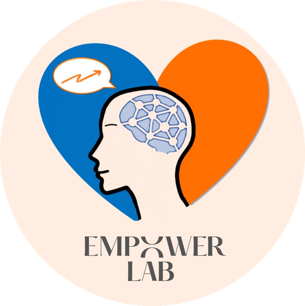

« L’autostima è l’esperienza di sentirsi capaci di affrontare le sfide fondamentali della vita. »
Nathaniel Branden, The Six Pillars of Self-Esteem (1994)
Psicologo Bari e online: colloqui individuali e di coppia, supporto allo studio e agli esami, formazione e test psicologici.
Empower Lab Psy – Amodio & Caramia nasce con la missione di offrire supporto e strumenti concreti per comprendere meglio se stessi, affrontare momenti di difficoltà e sviluppare maggiore equilibrio e benessere nella propria vita.
Il progetto nasce dall’incontro tra psicologia, formazione e scienze dure, con un focus sul benessere della persona nella sua globalità e non solo come ingranaggio produttivo.
Attraverso colloqui, percorsi e attività formative ti accompagniamo nel costruire maggiore consapevolezza, autonomia e fiducia nelle tue capacità.
Un percorso personale per comprenderti meglio e affrontare ciò che stai vivendo, con strumenti concreti e senza giudizio.
Un percorso condiviso per ritrovare equilibrio in te e nella relazione attraverso nuovi modi di comunicare e stare insieme.
Studiare di più non è la risposta.
Scopri come funzioni tu nell'apprendimento e costruiamo il metodo e il supporto adatto a te.
Programmi personalizzati, costruiti passo dopo passo sui tuoi obiettivi.
Percorsi specifici ma strutturati, cuciti su di te.
Uno strumento in più per iniziare, monitorare e valutare il tuo percorso.
Test standardizzati, corretti e interpretati da un professionista, per fare chiarezza su un aspetto specifico.
Guide pratiche digitali per lavorare in autonomia su un tema specifico.
Un supporto in più, da solo o accanto a un percorso già in corso.
Empower Lab Psy è un progetto di psicologia e formazione dedicato alla crescita personale e allo sviluppo di strumenti psicologici utili per affrontare studio, relazioni, crescita professionale e scelte di vita.
Se desideri ricevere ulteriori informazioni su tutti i nostri servizi puoi contattarci tramite i canali che trovi qui
Consulta la sezione delle domande frequenti per trovare risposte ai quesiti che ci fate spesso.
Riflessioni, strumenti pratici e approfondimenti su psicologia, studio e crescita personale: scopri i nostri articoli e trova nuovi spunti sulle sfide che stai affrontando.
« L'autostima non è un lusso: è un bisogno umano fondamentale. »
Nathaniel Branden (1994)